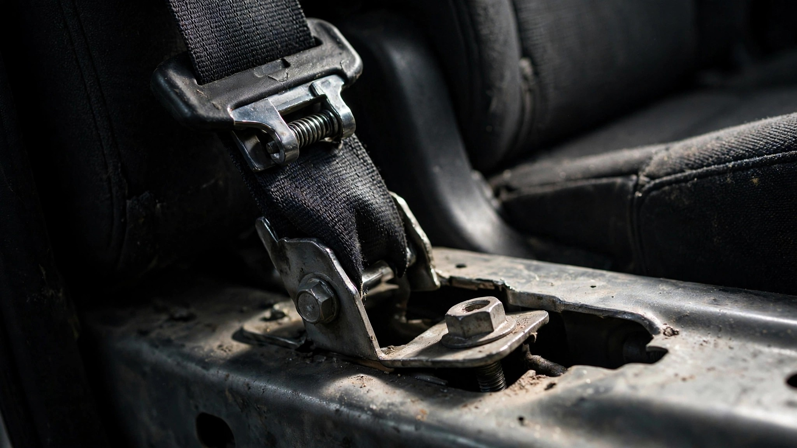

Stellantis Found Two Different Ways to Fail at Seat Belts. It Took Six Days.

The three-point seat belt has one job. It holds a human body inside a vehicle during the fraction of a second when physics is trying very hard to eject that body through the windshield. Nils Bohlin patented the design in 1959, and Volvo gave the patent away for free because the invention was too important to monopolize. NHTSA estimates the device saves 14,955 lives per year in the United States alone.[1] Sixty-seven years of engineering refinement have made the seat belt about as mechanically simple as a safety device can be while still working.
Stellantis needed six days to break it twice.
On August 4, NHTSA published recall 67D: 1,271,294 model-year 2019 through 2026 Ram 1500 pickups whose second-row seat belt buckle anchors may not have been bolted to the vehicle's body structure.[2] The root cause is an assembly error. Workers at the factory did not properly attach the component that connects the belt to the truck. Bolts that anchor the buckle to structural steel were, in some number of vehicles produced over an eight-year span from February 2018 to April 2026, not tightened to specification. Stellantis estimates 0.1% of the recalled vehicles actually carry the defect, which means roughly 1,271 Ram 1500s are driving around right now with back-seat restraints that could detach in a collision.
On August 10, NHTSA published recall 26V510: 48,777 Dodge Hornet and Alfa Romeo Tonale crossovers whose rear outboard seat belts may become twisted, preventing retraction.[3] The root cause is a supplier design weakness. Its retractor mechanisms, manufactured by Autoliv ASP of Auburn Hills, Michigan, have a flaw that allows the belt webbing to twist inside the retractor housing. A belt that cannot retract cannot maintain tension. A belt without tension in a 35-mph frontal impact is a decorative ribbon. Stellantis Europe began investigating in May after 484 warranty claims piled up.
These two recalls share almost nothing in common. Different platforms: the Ram rides on the DS architecture, a body-on-frame pickup truck designed in Auburn Hills; the Hornet and Tonale ride on STLA Medium, a unibody crossover platform engineered in Turin. Different production facilities, different model years, different affected seat positions, different suppliers. The Ram defect is a bolt that was not torqued. The Hornet defect is a retractor that was designed incorrectly. One is a human error repeated across thousands of shifts over 98 months of production. The other is a component that passed validation testing and still failed in the field.
What connects them is the corporate letterhead and the device that fails: the seat belt, the single most proven lifesaving technology in the history of the automobile.
Context sharpens the absurdity further. FARS data from 2014 to 2023 attributes 23,295 fatalities to vehicles from Stellantis brands, with Dodge accounting for 11,076 of those deaths and Jeep contributing another 6,976.[4] Those deaths span the entire Stellantis portfolio and predate most of the recalled models, so they cannot be pinned to these specific defects. But a broader question lingers. Nationally, 46% of passenger vehicle occupants killed in crashes are unbelted[5] — roughly 17,000 deaths per year where the absence of a functioning restraint is a contributing factor. NHTSA's data does not distinguish between a person who chose not to buckle up and a person whose buckle anchor was never properly attached.
Stellantis is not uniquely bad at seat belts. Ford recalled 240,000 Bronco Sports in June for second-row seats that could tip forward, compromising restraint geometry. Kia recalled 153,000 Sportages for a related rear-seat issue. The Aug 4 Ram recall was the third automaker in eight weeks to admit its back seat could not reliably hold a person in place during a crash.[6] But Stellantis is the only manufacturer to produce two mechanically distinct seat belt failures across two unrelated vehicle architectures and announce them within a single business week.
Bohlin's patent was three pages long. The mechanism has not fundamentally changed since 1959: a spool, a locking mechanism, a piece of webbing, and two anchor points bolted to structural metal. If this is the part your quality system cannot get right across two separate platforms in the year 2026, the problem is not the part.
Sources & References
- NHTSA, Lives Saved by Vehicle Safety Technologies, 2017. nhtsa.gov
- NHTSA Recall 67D, Ram 1500 seat belt buckle anchors (Aug 4, 2026). nhtsa.gov/recalls
- NHTSA Recall 26V510 / FCA 84D, Dodge Hornet and Alfa Romeo Tonale seat belt retractors (Aug 10, 2026). nhtsa.gov/recalls
- NHTSA, Fatality Analysis Reporting System (FARS), 2014–2023. nhtsa.gov
- NHTSA, Seat Belt Use in 2023. crashstats.nhtsa.dot.gov
- NHTSA recall notices for Ford Bronco Sport (Jun 2026) and Kia Sportage (Jun 2026). nhtsa.gov/recalls